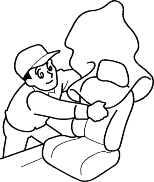
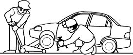
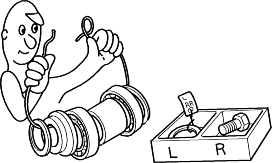
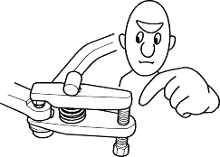
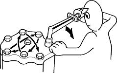

Observe all safety precautions and notes while working. |
 CAUTION
CAUTION- Protect all painted surfaces and seats against dirt and scratches with a clean cloth or vinyl cover.

- Work safety and give your work your undivided attention. When either the front or rear wheels are to be raised, block the remaining wheels securely. Communicate at frequently as possible when work involves 2 or more workers. Do not run the engine unless the shop or working area is well ventilated.

- Before removing or disassembling parts, they must be inspected carefully to isolate the cause for which service is necessary. Observe all safety notes and precautions and follow the proper procedures as described in this manual.
- Mark or place all removed parts in order in a parts rack so they can be reassembled in their original places.

- Use the special tool when use of such a tool is specified.

- Parts must be assembled with the proper torque according to the maintenance standards established.
- When tightening a series of bolts or nuts, begin with the centre or large diameter bolts and tighten them in criss-cross pattern in 2 or more steps.
